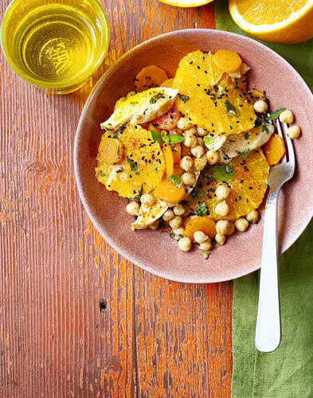

Carrots salad, oranges, chickpeas and chicken, Moroccan style

Description
This delicious dish with spicy chicken and chickpeas, inspired by Moroccan
cuisine, is sure to please everyone! If you have argan oil, a few
tablespoons will work wonders in the vinaigrette of this salad. You'll
find black cumin seeds in oriental grocery stores or delicatessens...
- Difficulty : Easy
- Cost : Cheap
- Prep time : 30 mins
- Cook time : 15 mins
Ingredients (servings : 4)
- 2 Chicken breast
- 265 g Cooked chickpeas
- 3 Oranges
- 3 Carrots
- 1 Clove of garlic
- 6 sprigs Mint
- 2.5 tbsp. olive oil
- 1.5 tbsp. Cider vinegar
- 3 tbsp. Neutral cooking oil
- 1 tsp. Black cumin seeds
- Espelette pepper
- Salt
Steps
-
Start this recipe by peeling 2 oranges raw. Cut them into slices and
squeeze the third.
-
Heat neutral oil in a frying pan over medium heat. Brown the chicken
breasts for 3 min on each side. Lower the heat, add the orange juice,
salt and chilli pepper. Cover and cook for a further 4-5 min. Allow
chicken to cool.
-
Peel and chop the carrots. Cook for 5 min in boiling salted water, then
drain.
-
Rinse and drain chickpeas (if canned). Peel, degerm and chop the garlic.
Wash and chop the mint. Chop the chicken.
-
Mix oil, vinegar, garlic, salt and chilli in a salad bowl. Add all the
salad ingredients, mix and serve.
Return